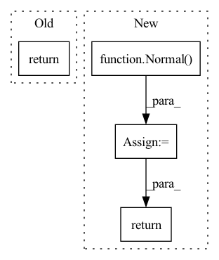

Pattern ID :324
Before Change
def forward(self, state):
a = F.relu(self.l1(state))
a = F.relu(self.l2(a))
return self.max_action * torch.tanh(self.l3(a))
class Critic(nn.Module):After Change
log_sigma = torch.clip(log_sigma, LOG_STD_MIN, LOG_STD_MAX)
sigma = torch.exp(log_sigma)
a_distribution = Normal( mu, sigma)
action = a_distribution.rsample()
logp_pi = a_distribution.log_prob(action).sum(axis=-1)
logp_pi -= (2 * (np.log(2) - action - F.softplus(-2 * action))).sum(axis=1)
logp_pi = torch.unsqueeze(logp_pi, dim=1)
action = self.max_action * torch.tanh(action)
mu = torch.tanh(mu) * self.max_action
return action, logp_pi, mu
def get_log_density(self, state, action):
a = F.relu(self.fc1(state))In pattern: SUPERPATTERN
Frequency: 3
Non-data size: 4
Instances Fragment ID: 1325841
Project Name: ryanxhr/dwbc
Commit Name: 7bf8e90c7bbf238b9a80c6c033844d37a17e898e
Time: 2022-06-24
Author: xuhaoran8@jd.com
File Name: algos/DWBC.py
M Class Name: Actor
N Class Name: Actor
M Method Name: forward(2)
N Method Name: forward(2)
M Parent Class: nn.Module
N Parent Class: nn.Module
M File Name: algos/DWBC.py
N File Name: algos/DWBC.py
M Start Line: 22
M End Line: 23
N Start Line: 36
N End Line: 52
Before Change
a = t.relu(self.fc1(state))
a = t.relu(self.fc2(a))
a = t.tanh(self.fc3(a)) * self.action_range
return a
class ActorDiscreet(nn.Module):After Change
a = t.relu(self.fc2(a))
mu = t.tanh(self.mu_head(a)) * self.action_range
sigma = softplus(self.sigma_head(a))
dist = Normal( mu, sigma)
act = (action
if action is not None
else dist.sample())
act_entropy = dist.entropy()
act_log_prob = dist.log_prob(act)
return act, act_log_prob, act_entropy
class Critic(nn.Module): Fragment ID: 1325836
Project Name: iffix/machin
Commit Name: 5b8a19f67832501f89f0861dca751b9e6978e63d
Time: 2020-06-16
Author: hanhanmumuqq@163.com
File Name: test/frame/algorithms/test_sac.py
M Class Name: Actor
N Class Name: Actor
M Method Name: forward(3)
N Method Name: forward(2)
M Parent Class: nn.Module
N Parent Class: nn.Module
M File Name: test/frame/algorithms/test_sac.py
N File Name: test/frame/algorithms/test_sac.py
M Start Line: 30
M End Line: 31
N Start Line: 30
N End Line: 41
Before Change
policy = Normal(self.actor(state), std)
else:
policy = Categorical(logits=self.actor(state))
return policy
// Calculates the log probability of an action a with the policy π(·|s) given state s
def log_prob(self, state, action):
After Change
def forward(self, state):
std = torch.exp(self.log_std)
mu = self.actor(state)
normal = Independent(Normal( mu, std) , 1)
//policy = TransformedDistribution(normal, [TanhTransform(), AffineTransform(loc=self.loc, scale=self.scale)])
return normal
//normal.entropy() // Needs double-check with Kai-san can we just take normals entropy term for this?
// Calculates the log probability of an action a with the policy π(·|s) given state s
Fragment ID: 1325835
Project Name: kaixhin/imitation-learning
Commit Name: 59109549a2250a3f1b4af82385a793441ed09bd8
Time: 2021-04-10
Author: dan.lillrank@gmail.com
File Name: models.py
M Class Name: Actor
N Class Name: Actor
M Method Name: forward(2)
N Method Name: forward(2)
M Parent Class: nn.Module
N Parent Class: nn.Module
M File Name: models.py
N File Name: models.py
M Start Line: 39
M End Line: 44
N Start Line: 41
N End Line: 45